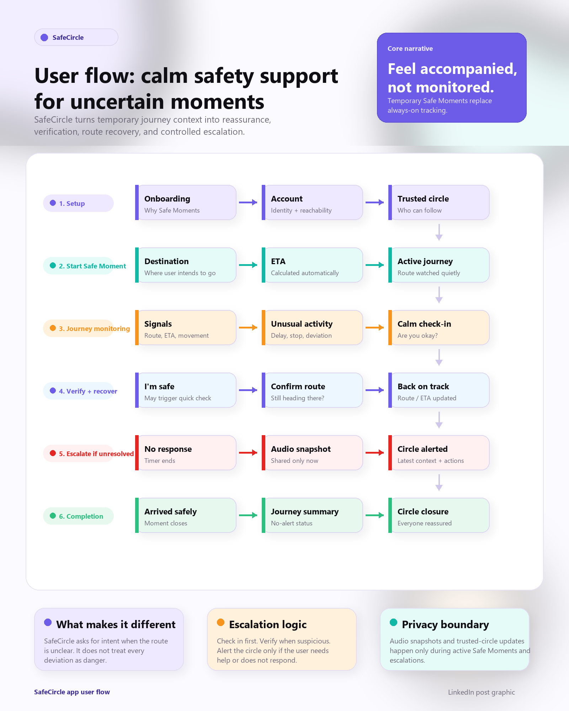
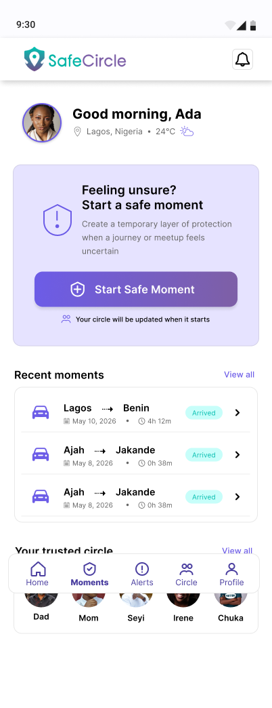
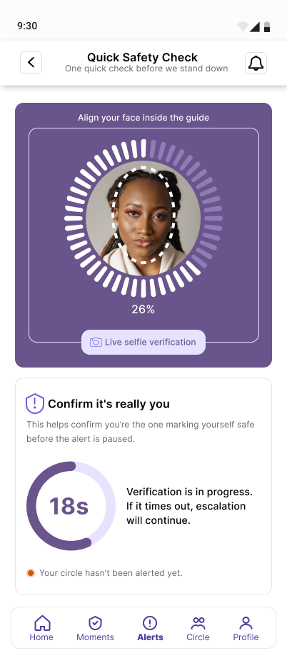
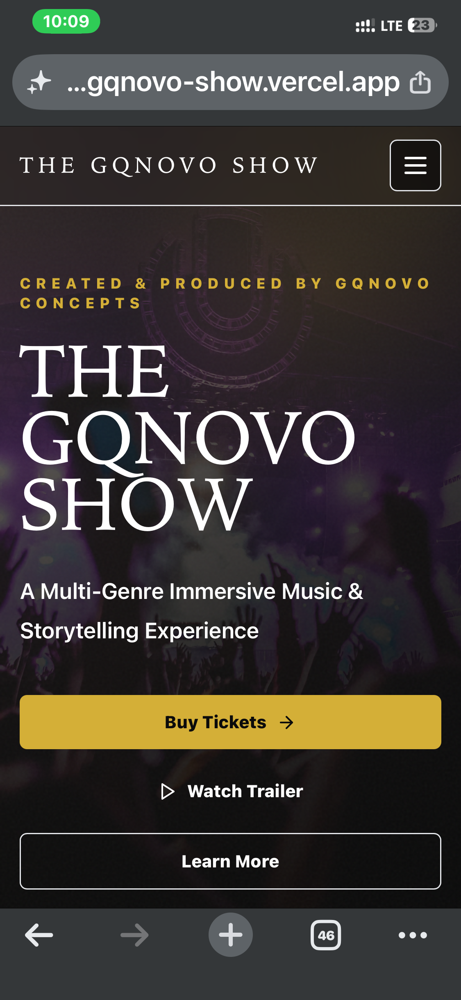
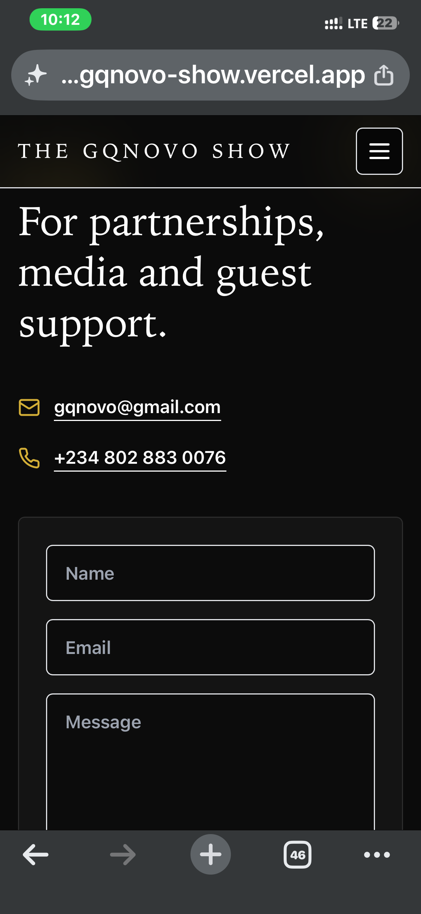

Experience
End-to-end product design across research, strategy, wireframes, prototypes, design systems, and polished visual execution.
Hi, I'm
Product Designer crafting digital experiences that feel effortless.
I'm a Product Designer focused on UI/UX, creating intuitive and user-centered digital products. I use Figma, prototyping, and AI-assisted workflows to turn complex problems into clear, engaging experiences.


Selected Work
Privacy-first journey safety application.


A simpler way to discover, order and track your meals.


WEB DESIGN · UX/UI · WEB DEVELOPMENT
A responsive digital experience designed for an immersive music and storytelling event.


About
I'm Pascal Dakwoji, a Product Designer focused on UI/UX, creating intuitive and user-centered digital products. I use Figma, prototyping, and AI-assisted workflows to turn complex problems into clear, engaging experiences.
End-to-end product design across research, strategy, wireframes, prototypes, design systems, and polished visual execution.
Good design reduces cognitive load. It should guide without shouting, reassure without slowing people down, and earn trust through details.
Understand needs, fear, context, and behavior.
Turn ambiguity into flows, systems, and priorities.
Design refined interfaces with strong hierarchy and motion.
Test, learn, simplify, and raise the quality bar.
Case Study

Designing peace of mind for everyday journeys.

Problem
People often travel alone. Friends and family worry when they cannot tell whether someone is safe. Existing location sharing can feel passive, noisy, or easy to ignore, while emergency apps usually react only after something has already gone wrong.

Goal
The goal was to design a safety experience that monitors journeys, detects meaningful changes like long stops or route deviation, and escalates gracefully through trusted contacts when the user may need support.

Solo commuters, students, late workers, and frequent riders shared how they currently communicate safety.
Most anxiety came from silence, unclear arrival times, and not knowing when to check in.
Users wanted reassurance without feeling watched or forced to constantly interact.
SafeCircle could turn passive sharing into intelligent, human-centered support.
User Personas
Research revealed that SafeCircle serves both people travelling and the loved ones who care about them. Three primary personas emerged during research.
24 • Marketing Executive • Lagos
Amina frequently commutes home after work using ride-hailing services. She values independence but wants reassurance without constantly updating family members.
"I don't want people watching my every move. I just want them to know I'm okay."
31 • Software Engineer • Abuja
David regularly drives between cities for work. His wife worries whenever network coverage becomes poor or he doesn't answer calls.
"If I don't answer for thirty minutes everyone assumes the worst."
45 • Parent
Grace isn't the traveller. She's the worried family member who simply wants reassurance that her children are safe without tracking every movement.
"I don't need to know where my daughter is every minute. I just want to know she's okay."
Research Synthesis
Persona work helped translate interview patterns into design decisions. SafeCircle needed to support the traveller's independence, the driver's need for low-distraction updates, and the loved one's need for calm reassurance.
Amina wants family to know she is safe, but she does not want anyone watching every movement. This shaped Safe Moments as temporary, purpose-based journeys.
David misses calls while driving and cannot safely keep responding. This pushed the product toward automatic arrival updates and quiet background monitoring.
Grace does not need a live feed. She needs confidence and clear escalation when something feels wrong, which informed the delayed alert model.






Early Sketches

Lo-Fi to High Fidelity
Design System
SafeCircle's basic design system keeps safety flows clear, reassuring, and fast to understand. It uses a soft monochrome foundation, purple for trust and structure, teal for reassurance and progress, and warm status colors only when attention is needed.
Every component is designed to reduce anxiety while keeping the user in control.
Rethink Sans Bold / 20-32px / Tight line height
Rethink Sans Regular / 14-16px / 1.55 line height
Rethink Sans Semibold / 12-14px / Purple accent
Key Features
Lightweight check-ins that confirm the user is okay.
Quietly watches journey progress against the planned route.
Flags meaningful movement away from the expected path.
Recognizes unusual pauses and prompts the user first.
Simple confirmations reduce worry without extra calls.
Users control who gets notified and when.
Alerts move from gentle prompts to trusted contacts.
Automatically closes the loop when the journey ends.



Prototype
Watch the final prototype video showing how SafeCircle starts a Safe Moment, monitors the journey, checks in when something changes, and closes the loop with calm reassurance.
Open Prototype VideoRoute is being monitored quietly. Your circle only receives updates if something needs attention.
You have been stopped longer than expected. Check in before your circle is alerted.
Your circle has not been alerted yet.
Verification pauses escalation while you update your route or confirm your status.
SafeCircle ended this Safe Moment and let your trusted circle know you arrived.
Trusted contacts can see your live status, last known route, and emergency audio if available.
Final Outcome
SafeCircle brings location sharing, route monitoring, check-ins, and escalation into one coherent journey experience. The final product prioritizes trust, clarity, and emotional restraint.
Reflection
The hardest design challenge was balancing reassurance with privacy. Future improvements include smarter context detection, richer accessibility testing, wearable support, and localized emergency workflows.


Savora
Savora is a mobile food ordering and delivery experience designed around a straightforward journey - from discovering meals to placing an order and knowing exactly when it arrives.
Project Overview
The design covers the core customer journey: Discover -> Choose -> Order -> Pay -> Track -> Receive.
DiscoverBrowse meals and categories.
ChooseExplore meal details and pricing.
 Order
OrderReview items and quantities.
 Pay
PayChoose a payment method.
Follow the order until delivery.
Design Challenge
Design a mobile food-ordering experience that makes it easy for users to discover meals, understand what they are ordering, review their cart, provide delivery details, complete payment and know what is happening after placing an order.
Research Users Persona
The persona board captures the main ordering needs across speed, discovery, clear cart management, live tracking, and reassurance.

User Flow
The uploaded user flow maps the complete path from discovery through ordering, payment, confirmation, tracking, and delivery.

Interface Architecture
The interface architecture organizes the app around discovery, meal details, order review, delivery details, payment, confirmation, tracking, account, and support utilities.

Master Architecture
The master architecture shows how Savora connects discovery, decision making, order review, delivery details, payment, confirmation, tracking, and completion.

Low Fidelity Designs
The lo-fi exploration maps the essential screens and interactions before applying Savora's polished food-ordering visual language.

Discovery
The home experience puts discovery first, combining search, categories, promotions and popular meals into a single starting point.

Meal Details
Meal details give users the information they need before committing to an order, while keeping the primary action - adding the meal to the cart - immediately accessible.
Food image
Rating
Price
Quantity
Description
Calories
Preparation time
Add to cart
Cart & Checkout
The checkout experience separates the key decisions into clear steps: reviewing the order, confirming delivery information and selecting a payment method.


Order Confirmation
Congratulations!!!
Your order has been taken.
Estimated delivery time: 30 Mins.
Once an order is placed, the confirmation state communicates that the order was received and provides clear next steps: Homepage and Track Order.
Order Tracking
Tracking was designed to reduce uncertainty after checkout by making the order's current state visible at every stage.
Light & Dark Mode
Savora supports both light and dark themes while maintaining the same information hierarchy, navigation patterns and primary actions.


Savora Design System
Key Design Decisions
Food imagery receives strong visual prominence because choosing what to eat is central to the experience.
Prices remain visually prominent throughout the ordering flow.
The bottom navigation provides access to Home, Notification, Orders, Profile, and Live Chat.
The tracking experience separates Preparing, Out for Delivery, and Delivered.
The payment experience supports Card Payment, Pay on Delivery, and Cash / POS.
Interactive Prototype
Follow the journey from discovering a meal to placing an order and tracking it to delivery.
Final Showcase
Designed to make every step of ordering feel clear, visual and effortless.


Reflection
Savora allowed me to explore how visual design, interaction patterns and information hierarchy can work together to make a familiar everyday task feel simpler and more enjoyable.
Web Design · UX/UI · Web Development
A responsive digital experience designed to introduce GQnovo Show, communicate the event and guide visitors from discovery to action.
View Live Website ↗

Project Overview
The Challenge
The challenge was to create a website that could communicate what GQnovo Show is, help visitors explore the experience and event information, and make the next action clear without overwhelming the user.
UX / Information Architecture
The information architecture was structured to help visitors understand the experience first, explore supporting content, and then move naturally toward event information and action.

User Flow
The primary path takes visitors from discovering the show to buying a ticket, while secondary routes support gallery, videos, sponsors, and contact exploration.

Lo-Fi Wireframes
Representative wireframes mapped the layout, navigation, CTA placement, section ordering, and responsive structure before the final interface direction.

UI Design
The design system defines the visual language behind the interface, from the dark cinematic base and gold action colour to typography, buttons, form states, icons, spacing, radius, and shadows.

Key Screens

Introduces the show quickly and establishes the main action path.

Surfaces event details, date, time, venue, dress code, and ticket information.
Makes payment information, guest details, receipt upload, and verification clear.

Supports visual exploration through photos, moments, and behind-the-scenes content.

Creates clear routes for partnership, media, guest support, and communication.
Web + Phone
The web experience gives visitors a wide editorial view of the show, while the phone experience keeps navigation, event details, gallery content, and contact actions readable in a compact flow.
Interaction & Usability
Development
The website was designed and implemented as a functioning responsive site, then deployed live so visitors can access the experience directly.
Final Product
The final result is a responsive website that gives visitors a clear way to discover GQnovo Show, understand the experience, explore event content and move toward the next action.
View Live Website ↗
Outcome
GQnovo Show extends the portfolio into responsive web design and development, showing how UX structure, interface design, and implementation can work together inside one finished digital product.
Explore the Live Experience
Skills
Contact
Open to product design roles, UX collaborations, case study reviews, and thoughtful digital product work.